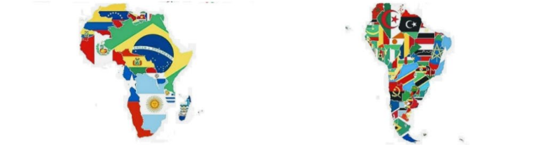
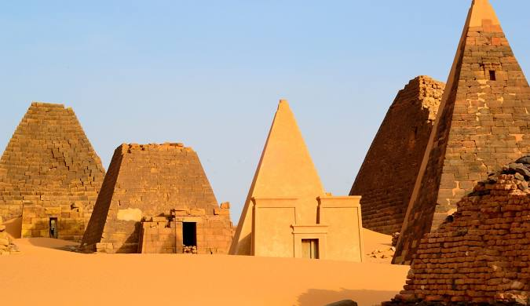

África e América do Sul, dois continentes que parecem opostos e realmente possuem muitas, mas também existem muitas semelhanças. Ambos os continentes são de climas predominantemente tropicais, com grandes florestas e savanas. A floresta Amazônica (Brasil) e a do Congo (Continente Africano) possuem grandes bacias hidrográficas, ambas enfrentam ameaças como desmatamento e claro, imensa variedade de fauna e flora.
| |
As fotos acima são de 4 países da América do Sul, Brasil, Peru, Argentina e Chile.O Chile por exemplo, é um país localizado na costa oeste da América do Sul, entre o oceano Pacífico e a cordilheira dos Andes. Sua capital é Santiago, e o território se destaca por ser extremamente longo e estreito: são cerca de 4.300 km de extensão, mas apenas 180 km de largura em média.
| |
 |
 |
 |
As fotos acima são de 4 países do continente Africado, Argélia, República Democrática do Congo, Sudão e África do Sul. O Sudão por exemplo, fica no centro-norte da África e tem passado por muitos conflitos políticos e sociais. Sua economia depende bastante da agricultura e da pecuária, mas enfrenta dificuldades de infraestrutura. É também um lugar de grande valor histórico, com ruínas ligadas às antigas civilizações núbias.